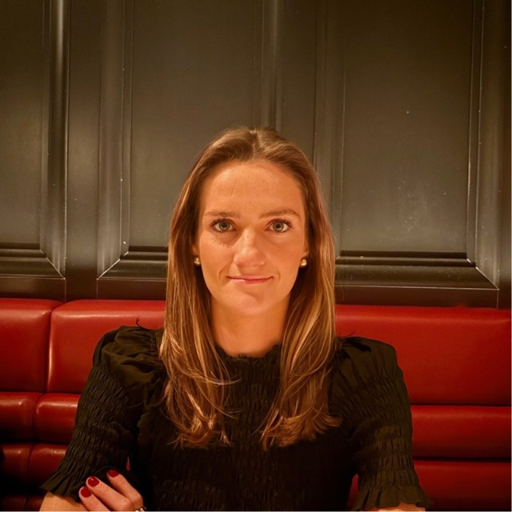

Connect the dots
Bring together digital, documentary, financial, and open-source records to understand events, relationships, and patterns.

⌖ NEW YORK CITY
Hey, I’m
Curious by nature. Steady under pressure. Drawn to the details that tell the bigger story.
I’m an investigative analyst working at the intersection of open-source research, digital evidence, and complex investigations. I turn scattered information into clear, grounded insight that helps people decide what to do next.
THE STORY ↓01 / Roots
I grew up in Wellesley, just outside Boston, and moved to New York City after graduating from Colgate. My work has taken me from financial research to public service investigations. Across both worlds, I’ve been drawn to the same questions: What do the records show? How do the pieces connect? What can we say with confidence?
I bring a researcher's curiosity, an analyst's care with evidence, and a commitment to making complex findings understandable and useful.
Be rigorous about the facts. Clear about uncertainty. Thoughtful about the people affected.
02 / The Journey
Manhattan District Attorney’s Office · Intimate Partner and Sexual Violence Bureau
Lead OSINT and records-based research, analyze digital and documentary evidence, develop investigative leads, and communicate findings to prosecutors and detectives.
Manhattan District Attorney’s Office · Intimate Partner and Sexual Violence Bureau
Supported more than 150 felony matters through evidence management, provider records analysis, interviews, and coordination with investigative partners.
Macquarie Capital · Leveraged Finance
Researched companies, credit, capital structures, and transaction risks; completed a rotation in Credit Sales & Trading.
B.A. in International Relations, minor in Economics · Magna Cum Laude
03 / Approach
Bring together digital, documentary, financial, and open-source records to understand events, relationships, and patterns.
Validate sources, distinguish facts from inference, and make confidence and investigative gaps visible.
Translate technical analysis into concise writing and testimony people can use to make informed decisions.
04 / Selected Work
Much of my work supports active investigations and is confidential. I’m building this section around public, non-case-specific writing and examples that show my analytical approach without sharing sensitive information.
A public-facing example of how disparate records can be organized, corroborated, and communicated responsibly.
05 / Now
I’m continuing to deepen my work in complex investigations, open-source intelligence, and digital evidence. I’m especially interested in roles where careful research, sound judgment, and clear communication can make a meaningful difference.
Outside work, I make time for the people and causes that keep me grounded, including volunteering as a mentor and riding in the Pan-Mass Challenge in support of Dana-Farber.
06 / Connect
Interested in investigative analysis, OSINT, or work that turns complex information into practical insight? I’d be glad to connect.